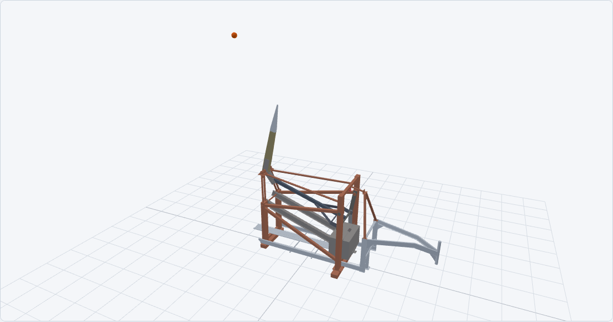

Carrboro, North Carolina
First in Fright.
A trebuchet team exploring the mechanics of throwing pumpkins.
Explore our machine in the interactive simulation, from the cocked position through release.

Explore the 2026 throw
Switch between 2D and 3D, scrub through time, and inspect the energy and force displays. The viewer runs on desktop and phone browsers.
8 lbPumpkin
11 ozSling
30°Launch elevation
The current model includes 9 oz of added hardware at the throwing-arm tip.
Take the viewer to the field
Open the simulation viewer online, wait for Offline ready, then install it through Chrome. It can reopen without a network connection.
For a portable copy, use Download Offline HTML inside the viewer.
Simulation source and documentation ↗